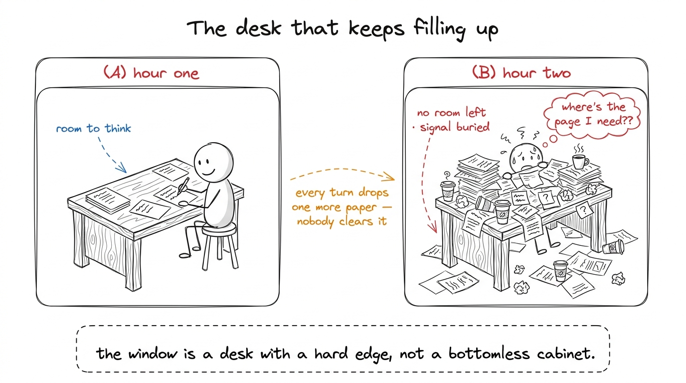
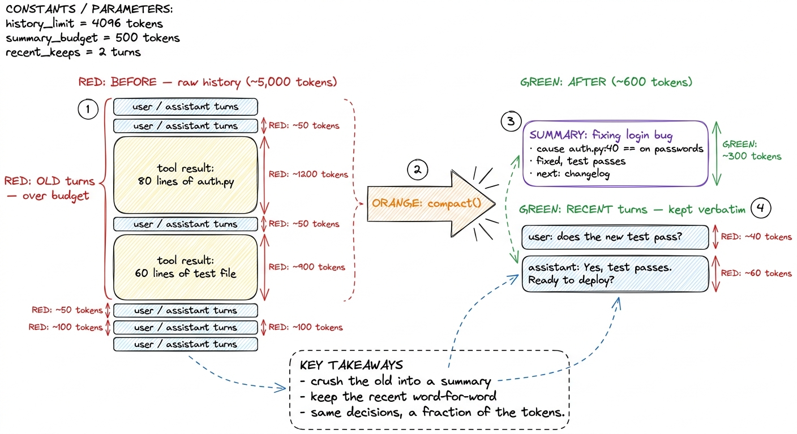
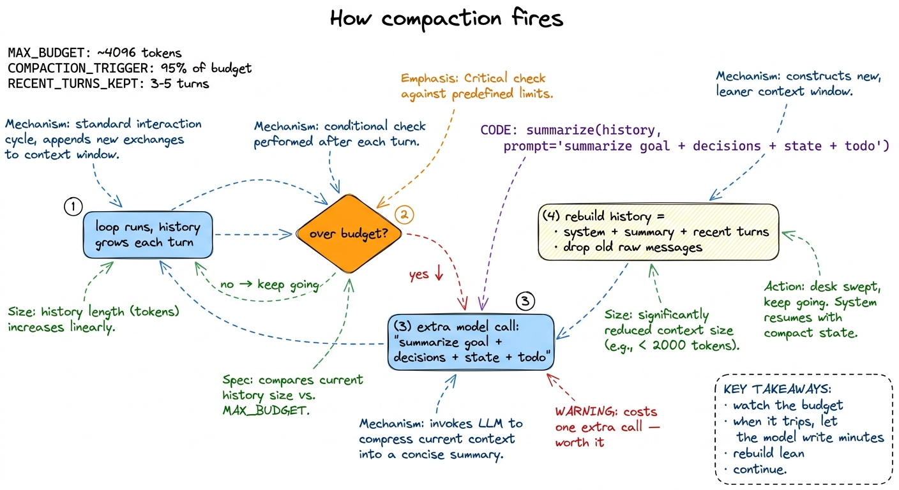
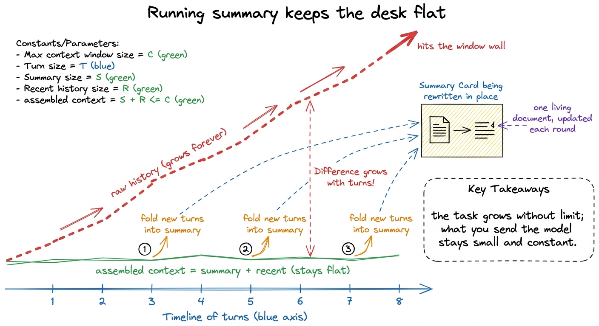
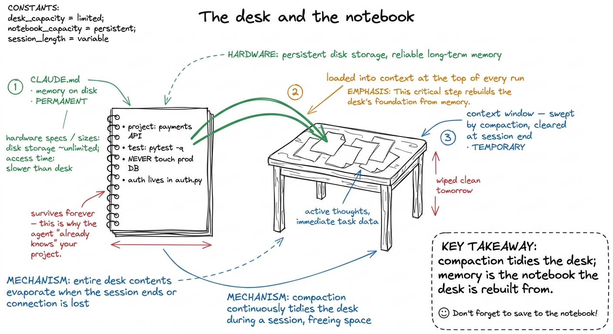

Teaching compaction & memory
By the end of this chapter you can stand at a whiteboard and teach the two moves that let an agent run for hours without falling over: compaction (tidying a crowded desk so you can keep working) and memory (a notebook of things that must survive even when the desk is wiped clean). These sound like housekeeping. They are actually the difference between an agent that dies after twenty minutes and one that ships a feature over a two-hour session. Let's build both from zero.
By now your students believe the load-bearing fact from earlier: the message array is the agent's whole memory, and the harness re-sends all of it on every call. This chapter is the slightly scary consequence. If the list is the only memory, and it only ever grows, then every long task is a slow-motion collision with the edge of the context window. Compaction and memory are how a good harness survives that collision. Teach them together — they are two answers to one problem.
Start with the desk that keeps getting messier
Open with a picture every student already lives with. You sit down to work at a desk. You pull out one paper, then another, then a coffee cup, then three more files, a sticky note, last week's printout. An hour in, the desk is buried. You can barely find the one page you actually need, and there's no room left to write anything new.
The context window is that desk. Every turn, the loop drops something new on it — a file the agent read, a shell command's output, the model's own reply. Nobody clears anything. The desk fills up.

figure rendering · The founding picture: the context window is a small desk that fills wiSay the stakes plainly so nobody thinks this is optional. When the desk overflows, one of two bad things happens: the call errors out because you sent more than the window holds, or the harness silently chops off the oldest papers — and the paper it chops might have been the original instructions. Both are how agents die mid-task. Compaction is how they don't.
Compaction: sweep the desk, keep the summary
Here is the whole idea, and you can say it in one breath: when the history gets too long, replace the old part of it with a short summary of what happened, and keep the recent part exactly as-is.
Break that into two halves — the split is the trick.
The recent turns stay verbatim. What the agent just did and what the last tool returned must be word-for-word accurate, because the model is about to act on them. You never summarize the present.
The old turns get crushed into a summary. The forty exchanges from an hour ago don't need to be transcript-perfect. They need to preserve the decisions and state — "fixing the login bug, cause is auth.py line 40, test passes, writing a changelog" — and throw away every raw file dump and dead end along the way.

figure rendering · Compaction in one picture: old turns get summarized down, recent turnsNow the mechanism, gently. Who writes the summary? The model itself. When the harness notices it's over budget, it makes an extra model call whose only job is: "here is a long conversation; write a tight summary that preserves the goal, the decisions, the current state, and what's left to do." The model hands back a paragraph. The harness then rebuilds the history — system prompt, that summary, plus the recent verbatim turns — and drops the old raw messages. The desk is swept.

figure rendering · The compaction cycle as a loop: grow, check budget, and when it trips,The running-summary trick (the version you'll actually demo)
There's a simpler, cheaper cousin of compaction that's perfect for teaching — build it live. Instead of waiting until you're over budget and summarizing a huge pile at once, you keep one running summary that you update as you go — like taking meeting minutes during the meeting instead of reconstructing them after.
The move: after each chunk of work, ask the model to fold the newest events into the existing summary. The summary stays roughly constant in size while the task grows without bound. The desk never overflows because you're wiping it continuously.
running_summary string, starting empty. After every N turns, make a side call: "Here is the current summary: {running_summary}. Here are the last N turns: {recent}. Return an updated summary that folds in the new events, same length." Then assemble context as [system] + [running_summary] + [last few verbatim turns] instead of the full history. Run a task that reads three files and makes an edit. Print the token count of the raw history vs. the assembled context side by side. Watch the raw history climb past 8,000 tokens while the assembled context stays flat around 1,500. That flat line is the whole lesson.
figure rendering · The payoff plotted: raw history explodes toward the window wall, whileMemory: the notebook that survives a swept desk
Compaction handles clutter within a session. Two harder problems remain, and they need a different tool.
First: some facts must never be summarized away — the project's name, the command to run the tests, the rule "never touch the production database." If those live only in the transcript, compaction might blur them. Second: when the session ends and the agent starts fresh tomorrow, the swept desk is gone. A new session starts blank, with total amnesia about your project.
The answer to both is memory: a durable store that lives outside the message array, on disk, pulled into context when relevant. The canonical form is a plain file — Claude Code calls it CLAUDE.md — that sits in your project and loads at the top of every session.

figure rendering · Memory as the permanent notebook beside the temporary desk: CLAUDE.mdNow the honest nuance, because students will over-reach. Memory is not a place to dump everything "just in case." Recall the earlier lesson: every token loaded costs money each turn and dilutes attention. So the notebook must be short and high-signal — durable facts and rules, not a diary.
1 There's a spectrum here worth a word to sharper students. CLAUDE.md is static, always-loaded memory. Richer harnesses add retrieved memory — notes written to files during a task and pulled back by search only when relevant, so the agent can remember thousands of facts while carrying only the few it needs this turn. Same principle as the notebook, just with an index.
Teaching notes: the two-hour morning block
Here's a clean 7:00–9:00 AM shape for this session.
7:00–7:20 — The desk that fills up (20 min). Draw the desk metaphor. Do NOT mention "compaction" yet. Just let them feel the problem: the list only grows, the window has a hard edge, long tasks collide with it. Checkpoint question: "If the message array only ever grows, what happens on a two-hour task?" You want them to say "it runs out of room" unprompted.
7:20–7:50 — Compaction by hand (30 min). Do the board example — shrink six messages into one summary card. Split recent-verbatim from old-summarized explicitly; that split is the exam question. Reveal that the model itself writes the summary. Land the meeting-minutes analogy to kill the "we're deleting memory" fear. Checkpoint: "Why do we keep the last two turns word-for-word but summarize the ones from an hour ago?"
7:50–8:30 — The live build: running summary (40 min). This is the heart of the morning. Build the running_summary loop in the bare harness live. Run the file-reading task. Print raw-history tokens vs. assembled-context tokens side by side and watch the two lines diverge. The flat green line is the aha — let it hang. Checkpoint: "What would happen to our token bill if we removed the summary and sent the full history every turn?"
8:30–8:55 — Memory and CLAUDE.md (25 min). Draw the notebook beside the desk. Distinguish "temporary desk" from "permanent notebook." Write a real four-line CLAUDE.md on the board. Then the crucial guardrail: it loads every turn, so keep it short. Kill the "put the whole codebase in it" instinct with the new-teammate line. Checkpoint: "CLAUDE.md loads on every single turn — so what belongs in it, and what doesn't?"
8:55–9:00 — Tie the knot (5 min). Deliver the aha line: same instinct, two timescales. Compaction for this session, memory across sessions. Send them off with that single sentence.
You can now teach
- The cluttered desk: why the context window fills every turn and collides with a hard edge on any long task.
- Compaction as sweeping the desk — old turns crushed to a summary, recent turns kept verbatim — with the model writing its own summary, and the meeting-minutes analogy that kills the "we deleted memory" fear.
- The running-summary trick and the live build: one small living summary that keeps the assembled context flat while the task grows without bound.
- Memory / CLAUDE.md as the permanent notebook beside the temporary desk — durable, high-signal facts loaded at the top of every session, and why it must stay short.
- The production link: this is exactly Claude Code's "compacting…" pause and its CLAUDE.md, mirrored in pi and Cursor — without it, no real coding task fits in a window.
- The unifying line: compaction and memory are one instinct at two timescales — keeping this session tidy and starting every session already knowing the project.